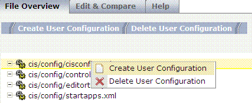
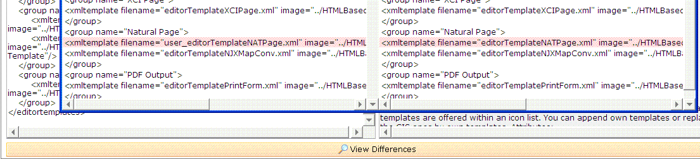

Modify User Configuration
CIS Server comes along with a set of configuration files.
Configuration Files
After installation of a CIS Server the files contain the default configuration settings. Typically you change one or more settings over time (e.g. you change parameter session timeout in the file cisconfig.xml). The problem: you loose this changes if you (re-)install a CIS Server over the existing installation.
The User Configuration Manager is a tool to support the handling of configuration files with user defined modifications. The CIS framework distinguishes between:
User configuration files start with the prefix user_. When a file with the name user_editortemplates.xml exists, the CIS framework will use this one instead of the default editortemplates.xml. If for the configuration files listed above no file with the name user_<configfilename> exists the default configuration file is used. In future upgrade-kits configuration files starting with user_ will be automatically copied to your upgraded version. This allows you to automatically keep your configuration settings and if necessary adapt them to the new features introduced in the new version.
This Tool supports the creation of user configuration files. It also has some basic support for comparing them with the corresponding default configuration files.
The following describes the recommended steps to manage user configuration files:
Use menu item "Create User Configuration"

Create User Configuration
This will create a copy of the default configuration file. The file name of a copy is the prefix "user_" following the origin file. The "user_"* copy is stored within the directory of the original file. The File Overview Screen will show the copies.
Switch to the tab "Edit -> Compare" Select the corresponding default configuration file if not yet selected. Now you can modify the user configuration file. You can also do a very basic compare of the "user_"* file with the default configuration files
Modify User Configuration
When an upgrade to a new version has been executed, the default configuration files have changed. You can now use the Compare feature as described in Step 2 to compare your *user_"* configuration files with the default ones. In case of new features you might want to add changes to your "user_"* files.

Switch to File Compare Screen
Select "Compare" to switch into the File Compare Screen. At the left hand you see the user file - at the right hand the defaultfile. To see differences click button "View Differences" at the bottom of the page. A file diff popup appears.
In case you modified the cisconfig or the controlllibraries configuration files you must restart the CIS Server. For modifications of editortemplates.xml no restart is required.
When deleting "user_"* configuration files the default configuration files will be the active configuration again.
Be very careful with deleting "user_"* configuration files. After a delete they are physically deleted from disk. There is no undo for this delete.